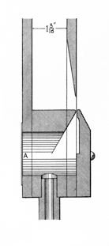

|
Corno Dolce Italian? |
|
This name has been used for a number of different stops. Grove says that it is �either a soft reed stop (built by Serassi, c1810) probably developed from Venetian Regals, or a wide Flute stop in Italy (c1750-1900), sometimes in the form of an inverted cone.� Williams supports that description, adding that it �could be a wide, wood Hohlflöte, or open flute (Catania, 1750-55)�. Wedgwood considers it to be a louder form of the Flauto Dolce, usually having inverted-conical pipes, but sometimes conical, and occasionally resembling the Waldflöte. Irwin describes it as moderate or large scale foundation stop of 8' or 16' pitch, having a soft tone suggestive of a soft and delicate horn, usually slightly inverted conical in form, but sometimes cylindrical or slightly conical, made of either wood or metal. Even Audsley seemingly cannot make up his mind: in his stop dictionary he describes it as being of inverted conical form, but having a flute tone without any horn quality; in The Art of Organ Building, on the other hand, he provides the following description and illustration:
 The open wood stop to which this name has, apparently with some propriety, been given is another of the creations of Mr. Thomas Pendlebury. The tone of this fine stop is brighter than that of the true Clarabella or Hohlflöte. In the tenor and middle octaves the tone strongly resembles that of the orchestral Horn played softly; and it is this fact that has induced the inventor to name the stop Corno Dolce. In his notes on the stop, Mr. Pendlebury remarks: �In the tenor and middle octaves the tone sounds much more pure in chords than in single notes. It has both body and brilliancy, yet the upper partial tones, present in the compound voice of the pipes, do not stand out in the self-assertive manner peculiar to those which belong to the pungent voice of string-tone pipes.�
The peculiar formation of the tone-producing portion of a Corno Dolce pipe is shown in [the illustration reproduced here], which is a Longitudinal Section of this portion of a middle c1 pipe. The inverted mouth is cut in the wide side of the pipe, and is kept moderately low; the block is slanted; the cap is beveled internally; and the wind-way is kept very fine. But perhaps the most noteworthy feature of the pipe is thus mentioned by the inventor: �In forming the throat, a hole as large as the scale will allow is bored from the front right through the back of the pipe. This hole [shown shaded] is covered at the back of the pipe with very soft leather [indicated at A], left somewhat slack so as to receive the first shock of the wind. This leather diaphragm also helps to neutralize the vibrations of the wind in the throat and foot, which vibrations are of greater detriment to the tone of labial pipes than is generally realized. On touching the diaphragm with the finger while the pip is speaking the vibrations are distinctly felt.� The most favorable wind-pressure for this stop is 3 inches. The following dimensions give the most approved scale of the stop:
Pipe Width Depth Height of Mouth Foot-Hole CC. 8 ft. 2 inches 1 1/2 inches 1/2 inch 1/2 inch C. 4 ft. 1 5/8 " 1 1/2 " 3/8 " 3/8 " c1. 2 ft. 1 1/2 " 1 3/16 " 3/8 " 1/4 " c2. 1 ft. 7/8 " 3/4 " 1/4 " 3/16 " c3 1/2 ft. 5/8 " 5/8 " 5/32 " 1/8 " The pipes of the bass octave are formed similar to those of the Geigenprincipal, their mouths being kept low and their wind-ways very fine. The harmonic-bridges are so placed as to produce a reedy rather than a stringy intonation. The pipes of the tenor octave are modified so as to join the bass to the treble tones in an artistic manner. Alluding to the dimensions above given, Mr. Pendlebury makes the following noteworthy remarks: �It will be observed that the scales and the heights of the mouths of the pipes of the tenor octave are nearly the same, with the result that each pipe is slightly different in quality. The beauty of the stop is not in any one particular pipe, but in the gradual changing of the tone-color.
All known examples are given below.
Corno Dolce 8' (?); Free Trade Hall, Manchester, England; Jardine. (Cited by Audsley in his stop dictionary, therefore presumably of flute tone.)
Corno Dolce 4', Pedale; Albert Hall, Sheffield, England; Cavaillé-Coll 1873 (destroyed).
Corno Dolce 4', Pedale; Parr Hall, Warrington, England; Cavaillé-Coll 1875.
Corno Dolce 16', Recit Expressif; Saint-Ouen, Rouen, France; Cavaillé-Coll 1890.
Corno Dolce 4', Pedale; Sacre-Coeur, Paris, France; Cavaillé-Coll 1898.
Corno Dolce Flat 8', 4'; Cadet Chapel, United States Military Academy, West Point, New York, USA; Moller 1923.
|
Original website compiled by Edward L. Stauff. For educational use only. CornoDolce.html - Last updated 9 January 2003. |
Home Full Index |